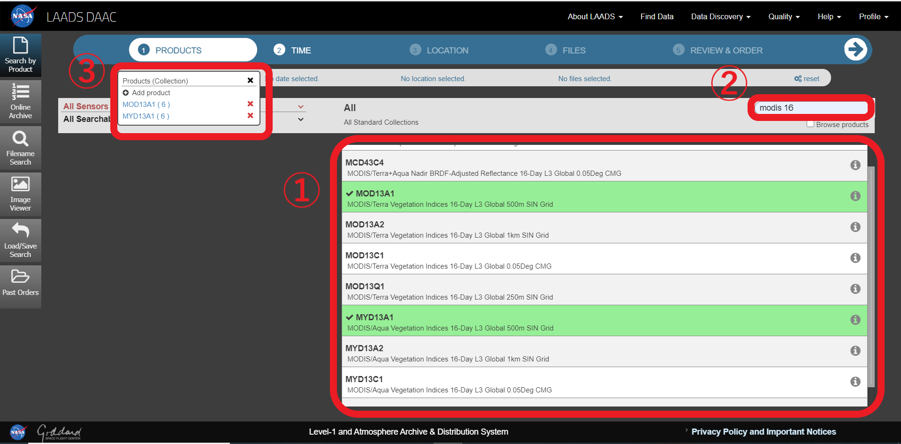
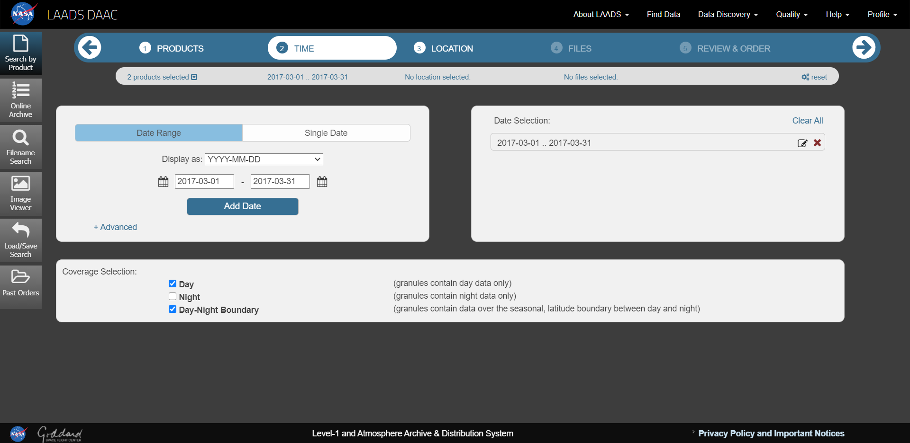
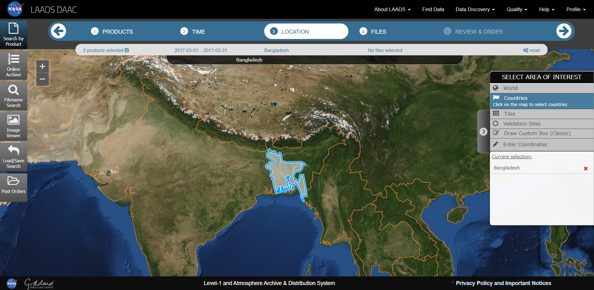
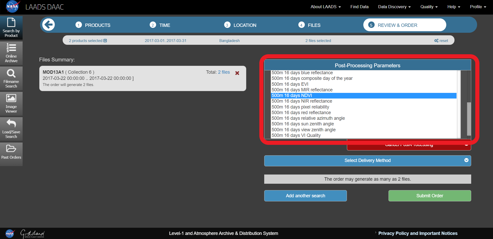
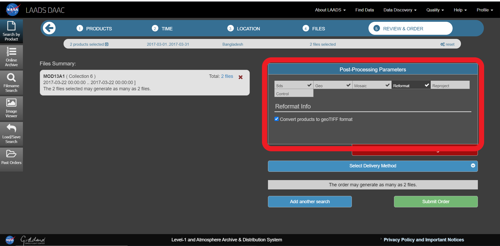

Chapter 3 衛星データの取得方法(LAADS DAAC編)
今回は、LAADS DAACを利用して、BangladeshのMODIS Vegetation Index Productsをダウンロードする方法をご紹介します。
MODIS: NASAによって開発された可視・赤外域の放射計で、地球観測衛星のTerra、Aquaに搭載されている。
Vegetation Index Products: 植物による光の反射の特徴を生かし、植生の状況を把握することを目的とした指標
3.1 LAADS DAACに登録/ログインする
LAADS DAACから取得できるデータ
MODIS(最新データ日時：2020年9月29日)
AVHRR
ESA copernics-sentinel-3
MERIS
VIIRS
3.2 【Find Data】を押す
find data
3.3 ①PRODUCTS：必要なデータを選択する
ここではMOD13A1,MYD13A1を選択した。 
3.4 ②TIME：取得したいデータの日時を設定する
ここでは2017年3月1日から2017年3月31日を設定。
必ず【Add date】を押す。 
3.5 ③LOCATION：取得したいデータの地域を設定する
ここではバングラデシュを選択する。
【Countries】を押すと、国境が表示されるので、データを取得したい国を選択する。
そのほかにも、全世界や自分で地域を設定することも可能。 
3.6 ④FILES：表示されたファイルから必要なものを選択する
ここでファイルの左にある【Download】を押すとHDFファイルのダウンロードが可能。 GeoTIFF形式に変更したい場合は、以下の操作を行う。
files
3.7 ⑤REVIEW&ORDER：ファイルの形式などを指定し、ダウンロードする
【Apply Post－Processing】を押す。
今回はNDVIのデータを取得できれば良いので、【SDs】を押し、【500m 16days NDVI】を選択する。 
【Reformat】を押し、【Convert products to geoTIFF format】にチェックを入れる。 
3.8 【Submit Order】を押す
5分程度で登録しているメールアドレスに“LAADS Web Order Notification”というタイトルのメールが届くので、文中のURLからダウンロードを行う。